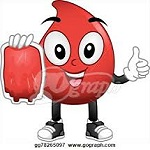

Welcome!
Donate bLood and help save a life today. Register as a recipient to find a transfusion centre. Register as a donor and save upto three lives by voluntarily following the following two steps.
FAQs
 Where Can I Donate?
Where Can I Donate?
Login to find a donor center or blood bank and schedule your appointment today. learn more
 How Can I know My Blood Type?
How Can I know My Blood Type?
After donating or when planning to be transfused your blood type is tested and the type is verified. learn more
 Why Donate?
Why Donate?
Saving more than one life is reason to donate. Just a pinch of blood can save upto three lives. learn more
Testimonials
I used to wait for blood donation campaigns to donate blood. After finding out about donate blood website i can readily help save a life.
Rock - StudentI have a condition that requires blood transfusion after a given time span. I had problems locating the nearest blood bank and book an appointment but now i thank donate blood for making it easier.
John - Businessman